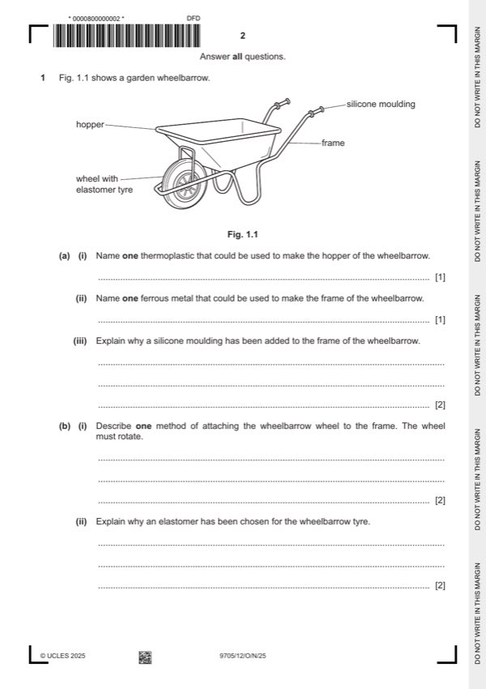

Question 1

Original paper page 2
Part 1(a)(i) — solution
Exemplar answers: 1 AOVR
Polypropylene [1], (PP) [1], Polythene [1]
Do not award the mark if a
Accept any named thermoplastic (acrylic, nylon...) or acronym (PP, PC, PVC...). thermosetting polymer is named.
Mark points
- Include the ideas shown in the solution above.
Part 1(a)(ii) — solution
Exemplar answers: 1 AOVR
Mild steel [1], steel [1], iron, [1] cast iron [1]
Do not award the mark if a non-
Accept other ferrous metals such as stainless steel. ferrous metal is named.
Mark points
- Include the ideas shown in the solution above.
Part 1(a)(iii) — solution
Exemplar answers: 2 AOVR
To make the handle more comfortable [1] by adding a grip / softer surface to hold /
more ergonomic shape. [1]
To improve [1] the grip (stop slipping). [1]
Makes the handle [1] more ergonomic. [1]
Makes the handle [1] more comfortable to hold. [1]
Makes the metal frame [1] less cold to the touch. [1]
To prevent injuries [1] from the sharpness of the frame edges. [1]
To prevent the end of the ferrous metal frame [1] from rusting. [1]
The metal will get hot in the sun [1] and the silicon will be more comfortable to grip.
[1]
The metal frame will feel cold in cold weather [1] and the silicon grip will be more
comfortable. [1]
Mark points
- Include the ideas shown in the solution above.
Part 1(b)(i) — solution
Exemplar answer: 2 AOVR
A threaded bolt will pass through the wheel and frame [1] and a nut tightened on
the end. [1]
Any other threaded fastener or fastener that holds the wheel in place.
University Press & Assessment 2025 Page 9 of 19
9705/12 Cambridge International AS & A Level – Mark Scheme October/November 2025
Guidance
Mark points
- Include the ideas shown in the solution above.
Part 1(b)(ii) — solution
Exemplar answers: 2 AOVR
An elastomer has been chosen for the wheel because it is a flexible material that
can be inflated [1] to smooth out the bumps when using the wheelbarrow. [1]
An elastomer has been chosen for the wheel because it can be inflated to spread
the load [1] and not make ruts in the ground. [1]
The elastomer is stretchy [1] so the tyre will not burst if it hits a sharp object. [1]
The elastomer is flexible [1] because it will deform and not break when the tyre hits
irregular shaped objects. [1]
Elastic [1] to help absorb forces. [1]
Material will flex [1] and not puncture if the wheelbarrow goes over sharp objects.
[1]
Guidance
Mark points
- Include the ideas shown in the solution above.